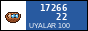

ostanovka · the bus stops of Irad, on instant film
Because in the Soviet time the architects could not build what they wanted, except the small things. A bus stop on a road where nobody goes, nobody checks it. So they made waves, yurts, rockets, horses. Every stop is a little bit of freedom in concrete.
That's what my teacher said, anyway. I think also: they are the only buildings made just for waiting. Everybody waits. The shepherd, the student, the grandmother with the buckets. The stop doesn't care who you are.
Now they are disappearing. The road service replaces them with the blue metal boxes with an advert inside. Faster to build. Nobody waits in them, people stand next to them.
So I take one picture of each. One, because the film is expensive (a pack costs like a week of lunches and someone has to bring it from Almaty). If the picture is bad, it is bad. That's the rule.
